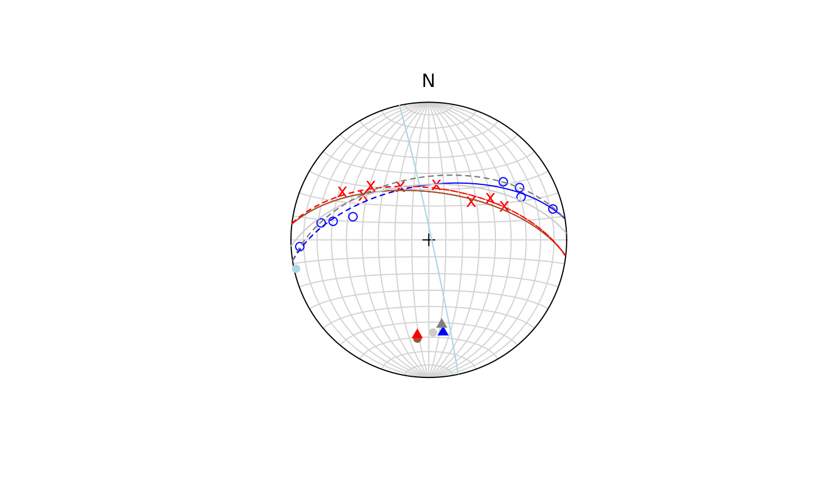

Least-square fit of small and great circles to spherically projected data
Source:R/best_pole.R
best_fit.RdFits a great circle arc to a set of lines, based on an independent scalar variable.
Arguments
- x
object of class
"Vec3","Line","Ray", or"Plane", where the rows are the observations and the columns are the coordinates.- val
A vector of real numbers. Values of independent scalar variables. Same length as
x.- iterations
A real number (positive integer). A bound on the number of numerical optimization iterations allowed.
- n_points
A real number (positive integer). The number of points along the regression curve requested.
- num_seeds
A real number (positive integer)
Value
list.
vecaxis of best-fit great- or small-circle. Class as
xconehalf-apical angle of the best-fit small-circle (in radians if
xis of class"Vec3", degrees otherwise)convergenceAn integer code.
0indicates successful completion.min_eigenvaluePositive if successful completion
r_squared\(R^2\) value of the regression
pointsA set of Vec3 points for the regression line
rangeRange of the regression line (in radians if
xis of class"Vec3", degrees otherwise)
References
Davis, J.R. and Titus, S.J. (2017). Modern methods of analysis for three-dimensional orientational data. Journal of Structural Geology, 96, 65–89. doi:10.1016/j.jsg.2017.01.002
Examples
set.seed(20250411)
data("gray_example")
bestgc_clea <- regression_greatcircle(gray_example[1:8, ])
bestgc_bedd <- regression_greatcircle(gray_example[9:16, ])
bestgc_all <- regression_greatcircle(gray_example)
bestsc_clea <- regression_smallcircle(gray_example[1:8, ])
bestsc_bedd <- regression_smallcircle(gray_example[9:16, ])
bestsc_all <- regression_smallcircle(gray_example)
stereoplot()
points(gray_example[1:8, ], col = "blue")
points(gray_example[9:16, ], col = "red", pch = "x")
# best for cleavage
lines(bestsc_clea$vec, bestsc_clea$cone, col = "lightblue")
points(bestsc_clea$vec, col = "lightblue", pch = 16)
lines(bestgc_clea$vec, lty = 2, col = "blue")
points(bestgc_clea$vec, col = "blue", pch = 17)
# best for bedding
lines(bestsc_bedd$vec, bestsc_bedd$cone, col = "sienna")
points(bestsc_bedd$vec, col = "sienna", pch = 16)
lines(bestgc_bedd$vec, lty = 2, col = "red")
points(bestgc_bedd$vec, col = "red", pch = 17)
# best for all
lines(bestsc_all$vec, bestsc_all$cone, col = "gray80")
points(bestsc_all$vec, col = "gray80", pch = 16)
lines(bestgc_all$vec, lty = 2, col = "gray50")
points(bestgc_all$vec, col = "gray50", pch = 17)
